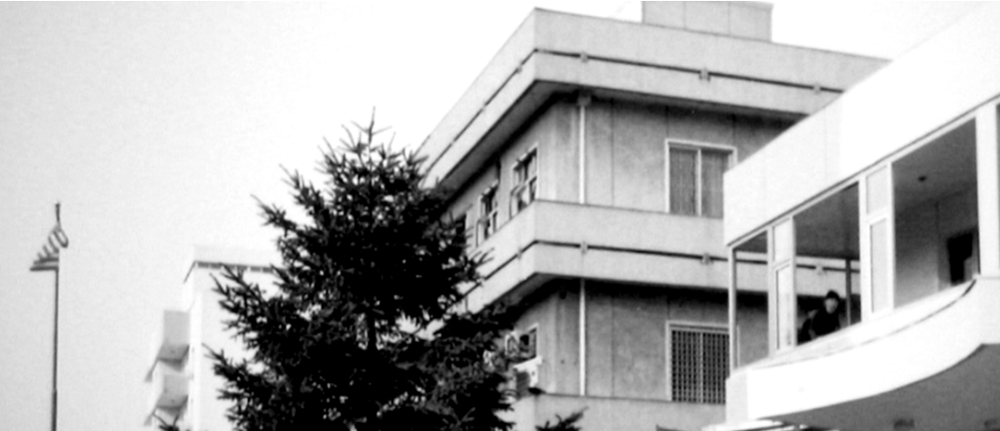
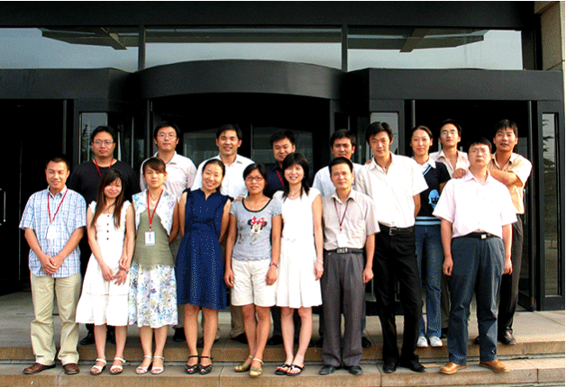

作为中国第一家从事门窗制造的正规企业， 20年来美驰始终在为高品质门窗工艺与品质的精进而不懈努力。 美驰的22年的发展史， 也是中国门窗行业走向正规化生产的22年。
1996 美驰诞生1996 美驰诞生
中国首家引进德国木门窗技术和设备，组件国内首家门窗展示中心，开创了全新的门窗服务模式。
1997 走向正规化进程
组建专业的客户服务系统，开始提供高档塑料门窗服务。
1998 品牌创市场
美驰开始进入门窗工程服务领域，和国内著名的地产商万科、万通展开了合作。
1998 品牌创市场
美驰开始进入门窗工程服务领域，和国内著名的地产商万科、万通展开了合作。
1999 自主研发 务实创新
美驰自主开发并生产意式56系列纯木、铝包木高档门窗。承接并通过了国家级“综合防范”门窗课题研究，代表北京建材参加“建国50周年成就展”。
2000 中国门窗领导者地位确立
通过ISO9001国际质量体系认证和英国皇家USK认证，中南海及人民大会堂、美国驻华大使馆等标志性重要建筑开始选用美驰门窗，开创了向美、日等发达国家出口门窗的先河。
2001 持续创新 书写行业标准
开发出全新的木包铝门窗和节能铝合金门窗。
2002 深耕市场 升级内功
成立了国内首家门窗研究所，并于2005年成为北京市“企业技术中心”。
2003 厚积薄发 社会公认
开发了木质幕墙系列产品，同年获“北京市著名商标”。
2004 进入快速成长期
国内首家引进并投入生产美式纯木、铝包木门窗。
2005 确立门窗全产业链路线
获“高新技术企业”“北京名牌”等荣誉。自助生产高精级门窗专用密封条。
2006 全国战略初见雏形
美驰北京新工厂与上海工厂进入全面建设中，研发并规模化生产MD系统的超密封塑料门窗，同年获“质量信得过企业”荣誉称号。
2007 勇担重任 再创行业新高度
承接了“国家科技支撑计划——环境友好型建筑材料研发”项目中的“典型地区建筑外窗的研发”课题，研发出78系列超级节能纯木、铝包木门窗，并于2010年通过了国家级的验收。

2008 完成集团化蜕变
上海金山生产基地投入运营；同年美驰门窗通过了国家级“高薪技术企业”认证。
2009 实至名归 改写行业准则
“美驰”被国家工商局认定为“中国驰名商标”通过北京发改委等五部门联合考评，全线产品均获得“自主创新产品”证书。同年，中空玻璃和水性漆涂装线投入运营，筹建铝卷帘生产线。
2010 布局全国 战略谋划
圆满完成国家核心建筑门窗项目，并获得高度评价。同年开始建设全国性销售渠道，美驰门窗专卖店数量突破50家。
2011 有口皆碑 风靡市场
荣获中国房地产500强开发企业“首选品牌”。第三代德式窗上市。
2012 规模经营 持续领先
上海基地完成展示中心，国际门窗技术交流中心，检测中心建设，完成了超高超大门窗的开发。
2013 突破核心技术
荣获“中国建材十大最具市场前景加盟品牌”。同年再度赢得国家核心建筑门窗改造项目。
2014 高端门窗服务商角色形成
完成全国近70家销售网点布局，建立了全国统一客户服务中心。与众多知名设计装饰公司达成战略合作。
2015 客户体验再上新台阶
创新服务，开启拒绝无推诿的“首问责任制”，提升服务效率，打造五星服务的优质客户体验。
2016 20年坚持只为一扇好窗
九大高性能门窗系统全新上市，推出“巨匠芯”生产工艺标准及巨匠级员工岗位责任标准。被北京商报评为“中国十大门窗品牌”之首。